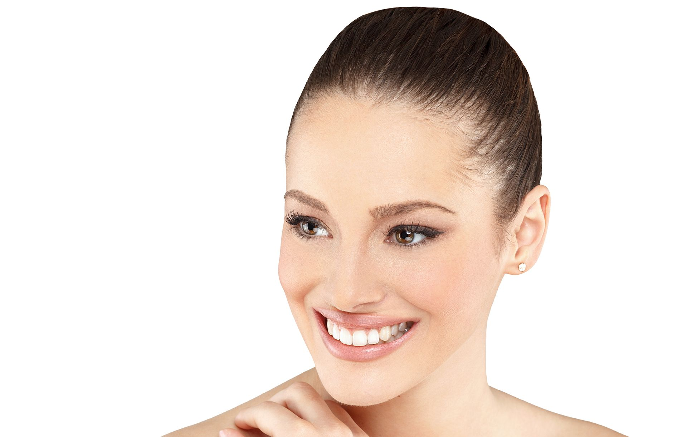

Elapromed Microcurrent Transdermal
Advanced Rejuvenation • No Needles • Instant Glow
Advanced European Skin Rejuvenation
Elapromed treatments are non-invasive, advanced European skin rejuvenation facials that use microcurrents and transdermal technology to deliver highly concentrated botanical serums deep into the skin.
This technology hydrates, boosts collagen, and targets concerns such as aging, acne, pigmentation, and loss of firmness—offering fast, painless, and downtime-free results.
Why Choose Elapromed?
Deep Delivery: Transdermal technology ensures up to 70ml of active ingredients are absorbed.
Organic Formulas: We use proprietary organic serums with plant stem cells, free from parabens and artificial colors.
Painless: A relaxing treatment with a gentle, soothing tingling sensation.
Zero Downtime: Walk out with an immediate radiant glow and no recovery time.
Targeted Skin Concerns
- Fine Lines & Wrinkles
- Loss of Firmness & Elasticity
- Acne & Congestion
- Hyperpigmentation & Sun Spots
- Dehydrated & Dull Skin

How Does It Work?
Transdermalporation: A low-voltage microcurrent temporarily opens the skin’s dermal water channels. This allows for significant absorption of active ingredients deep into the dermis for maximum effectiveness.
Cellular Stimulation: The microcurrents stimulate circulation, hydration, and the production of collagen and elastin. At the same time, the treatment tones facial muscles for a lifted effect.
Nourishment: The skin is flooded with natural, active nutrients that enhance firmness, smoothness, and overall radiance, giving you a refreshed and youthful appearance.
FAQs
-
Clients typically feel a gentle, soothing tingling sensation as the microcurrents work. The treatment is completely painless and often described as very relaxing.
-
You will see immediate hydration and a radiant glow after just one session. However, multiple sessions provide cumulative benefits, leading to improved firmness and smoother texture over time.
-
No, there is absolutely no downtime. You can return to your daily activities immediately after your appointment with glowing skin.
-
For optimal results, we typically recommend a series of treatments. We can discuss a personalized plan based on your specific skin goals during your consultation.
-
Yes. We use proprietary organic serums containing plant stem cells and essential actives. They are free from parabens, artificial colors, and fragrances to safely nourish and protect your skin.